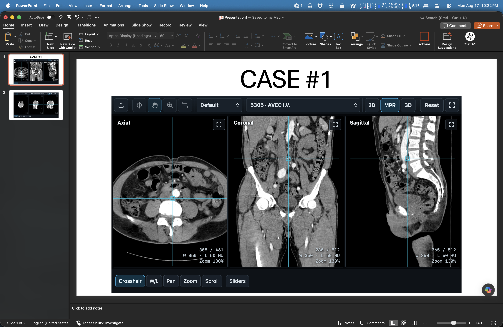

PowerPoint add-in · 3 of 4
Install locally on macOS
PowerPoint for Mac loads sideloaded add-ins from its local wef folder.
- 1
Prepare the file
Close PowerPoint. Right-click Download manifest.xml, choose Download Linked File As… (or Save link as…), and save it as manifest.xml.
- 2
Create and open the add-ins folder
Paste this command into Terminal:
mkdir -p "$HOME/Library/Containers/com.microsoft.Powerpoint/Data/Documents/wef" && open "$HOME/Library/Containers/com.microsoft.Powerpoint/Data/Documents/wef" - 3
Copy, rename, and reopen
Move the file into that folder, rename it dicom-slides.xml, then reopen PowerPoint and choose Home > Add-ins > DICOM Slides.
